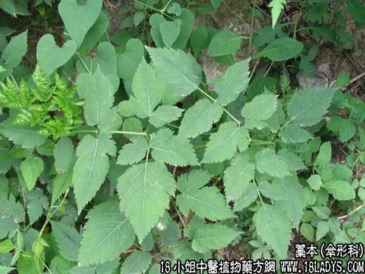

【中药概述】
藁本为伞形科草本植物藁本的根茎。辛、温。归膀胱、肝、胃经。
1．散寒解表：用于风寒表证，外感风寒所致的头痛、巅顶剧痛、痛连齿颊及偏头痛等证，如（神术散）、（<活法机要>羌活防风汤）。
2．祛风胜湿：用于风湿痹证之肢节疼痛等症，常与羌活，苍术等同用，如（通痹散）。
【药效鉴别】
藁本能直走头顶部，故又为治头顶部疾病的引经药。但又因督脉经与肾经相连，故本品也能治风寒侵入腰部而致的腰脊冷痛。
【药理作用】
对常见的皮肤真菌有较强的抑菌作用。挥发油能麻醉大脑，有良好的镇痛、解痉作用。
【化学成分】
含挥发油，由藁本酚、双甲氧丙烯苯等组成。
【用量用法】
6——20g，水煎服。
【使用注意】
血虚头痛、肝阳头痛及阴亏虚者忌。